All cases
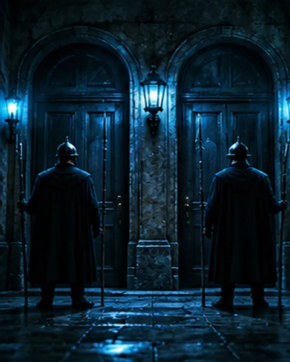
Two Guards, One Question★☆☆about 4 minTwelve Coins, Three Weighings★★★about 8 minThe Clock in the Mirror★☆☆about 3 minThe Missing Dollar★☆☆about 4 minFootprints in One Direction★★☆about 5 minThree Switches, One Bulb★★☆about 5 minCutting a Gold Bar Twice★★☆about 5 minThree People, Five Hats★★★about 8 min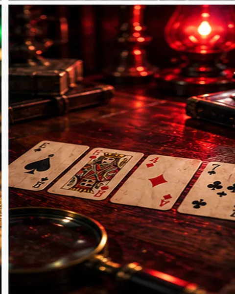
Checking the Four Cards★★★about 6 minThree Doors and a Detective★★☆about 5 minThe Dog That Did Not Bark★☆☆about 4 min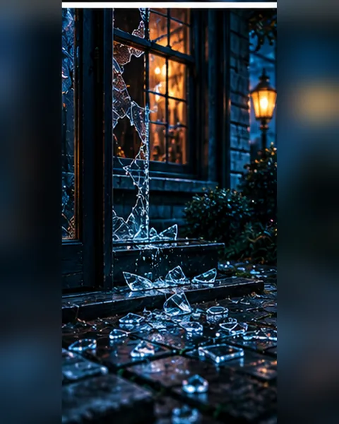
Glass Scattered Outside★☆☆about 3 min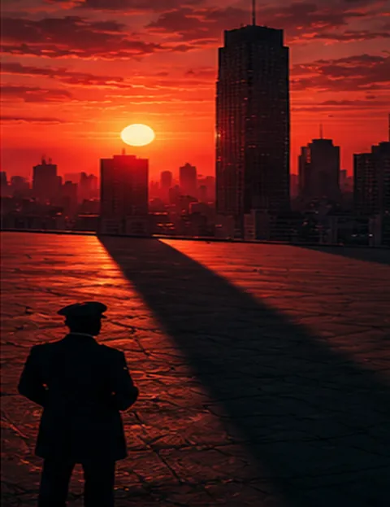
Measuring a Building by Its Shadow★★☆about 4 minThirteen People, Same Birth Month★☆☆about 3 min The Die That Cannot Exist★☆☆about 3 minThe Round-Trip Average Speed★★☆about 5 min
The Die That Cannot Exist★☆☆about 3 minThe Round-Trip Average Speed★★☆about 5 min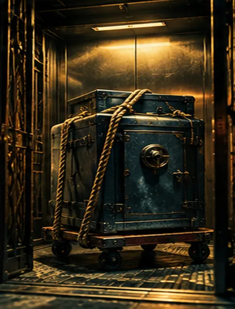
Over the Weight Limit★★☆about 5 minThree Things Across the River★☆☆about 5 minTwo Taps and a Tank★☆☆about 4 minThe Twenty-Minute Head Start★★☆about 5 minTwenty Percent Off, Then Ten Percent Up★☆☆about 3 minAcross the Round Table★☆☆about 3 minForty-Five Minutes from Two Ropes★★★about 8 minNine Minutes from Two Hourglasses★★☆about 6 min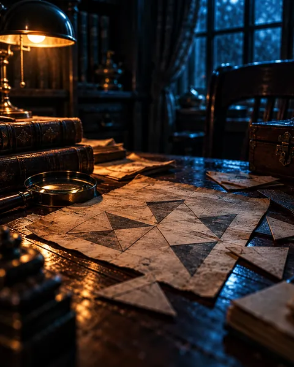
Twenty-Three People★★☆about 5 minCounting Coins by Remainders★★☆about 6 minTen Heaps, One Weighing★★★about 8 minThe Magic Square Lock★☆☆about 4 minThree-Cent and Five-Cent Stamps★★☆about 5 min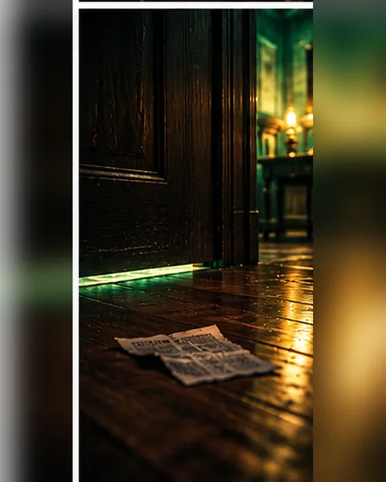
The Gap Under the Door★★☆about 5 min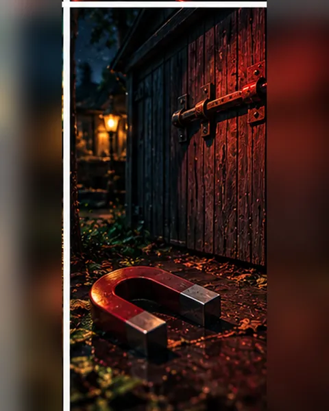
Moving the Bolt★★☆about 5 minPoison Hidden in the Ice★★☆about 5 minThe Missing Newspapers★☆☆about 3 minSocks in the Dark★☆☆about 3 minThe Four-Lamp Code★☆☆about 4 minThe Shifted Note★☆☆about 4 minA Sixty-Four Player Tournament★☆☆about 3 min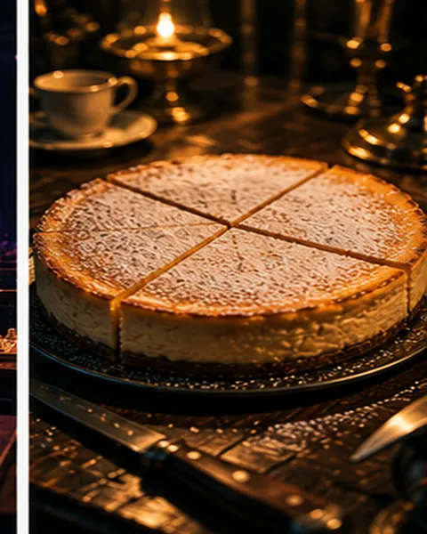
Three Cuts Through a Cake★★☆about 5 minWhat Day Is the Thirteenth?★★☆about 4 minThe Genuine Barcode★★★about 8 minThree Sticks, One Triangle★★☆about 4 min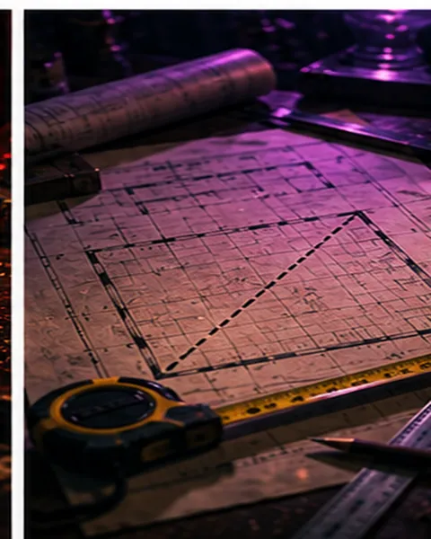
The Diagonal of a 3 by 4 Room★☆☆about 4 minFour Statements, One Culprit★★★about 10 minThe Thief’s Lying Notice★☆☆about 3 minThe Fall at the Mountain Pass Shrine★★☆about 5 minThe Late Train and the Man Ten Minutes Early★★☆about 5 min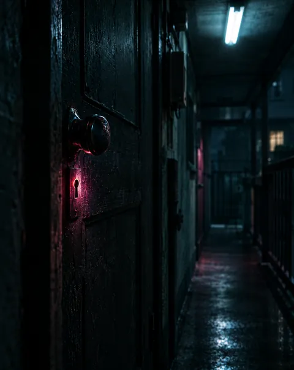
The Locked Room of the Man Behind on His Rent★★☆about 5 min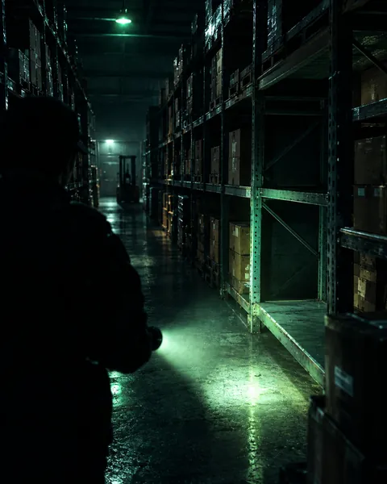
Three Statements, Only One Liar★★☆about 5 minNine Gold Coins, Two Weighings★★☆about 5 minThe Hand Seen in the Glass★☆☆about 3 minThe Empty Email with No Subject or Body★★☆about 5 min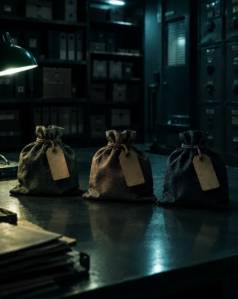
The Labels That Are All Wrong★☆☆about 3 minThe Door Closed by Melting Ice★★☆about 5 minThe Clock with Overlapping Hands★★★about 6 min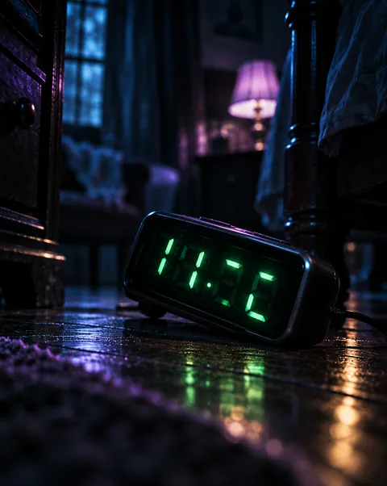
The Digital Clock That Looked Upside Down★★☆about 4 min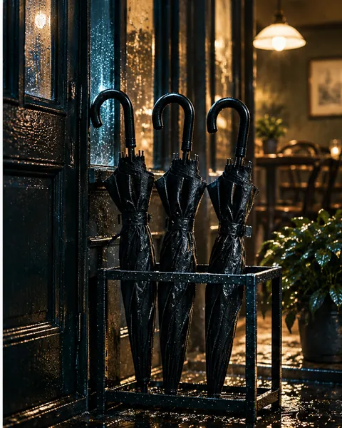
Three Umbrellas Mixed Up★★☆about 4 minThe Safe Cipher Is a String of Numbers★☆☆about 3 minWitnesses Who Like Dogs and Cats★★☆about 4 minThe Security Camera That Ran Seven Minutes Fast★★☆about 5 minThe International Call Across Time Zones★★☆about 5 minThe Time Told by the Shadow’s Direction★☆☆about 3 minThe Entrance Door with the Chain On★★☆about 5 min The Gem That Changed Weight★☆☆about 3 minOne Hundred Lockers★★☆about 5 minThe Hands at 3:15★★☆about 4 minThe Safe Code Is a Sequence of Numbers★☆☆about 3 min
The Gem That Changed Weight★☆☆about 3 minOne Hundred Lockers★★☆about 5 minThe Hands at 3:15★★☆about 4 minThe Safe Code Is a Sequence of Numbers★☆☆about 3 min